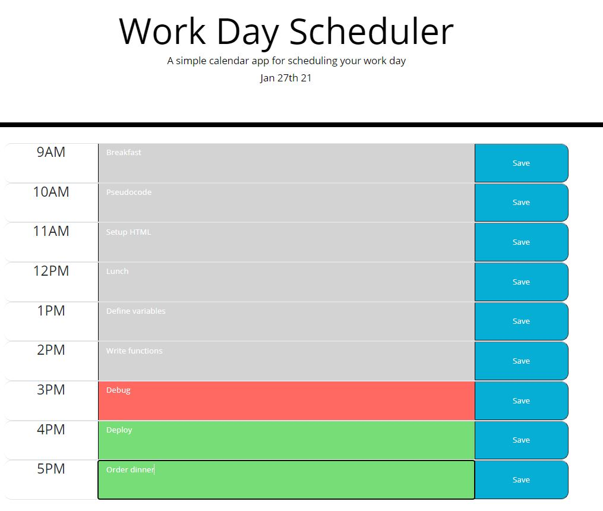
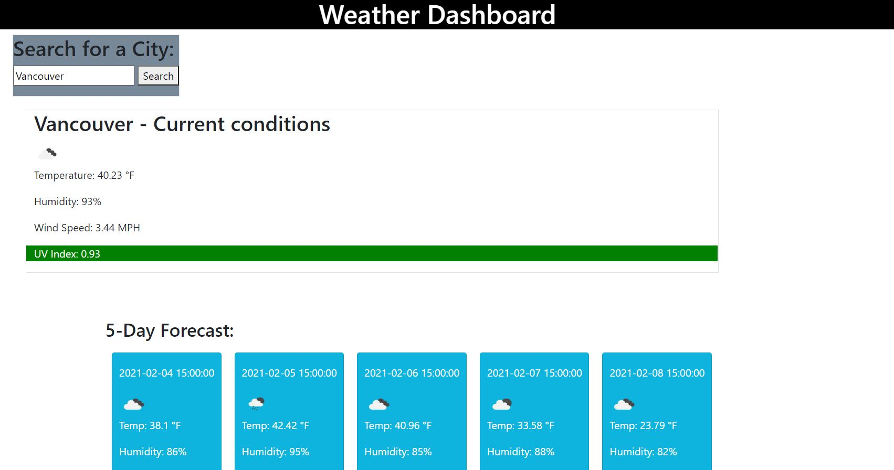

Nonprofit Locator
This application utlizes the ProPublica Nonprofit Explorer API and MapBox API to allow users to search for animal and environmental focused nonprofit organizations by city in the USA.
Created in collaboration with Rony Iraq, Kayleigh Hanna, and Angelica Courson
Repository
Depoloyed page

Day-Planner
This application allows users to save notes to a cell for each hour of the day and access again upon return sessions. App also color codes cells depending on the current time
Repository
Depoloyed page

Weather Dashboard
This application utilizes to OpenWeather API to allow users to look up weather conditions and a 5 day forecast by city.
Repository
Depoloyed page